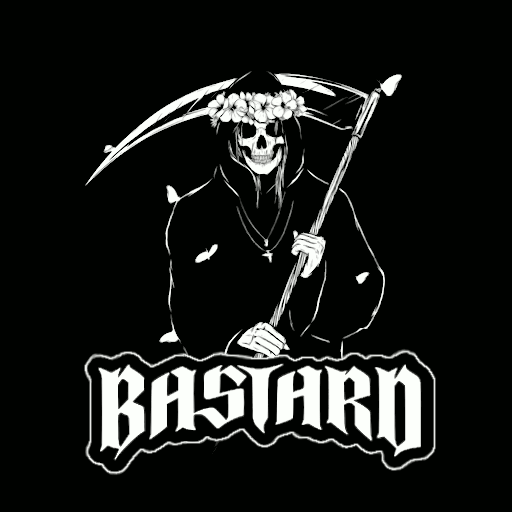

Аниме без границ
Аниме без границ.
You are not alone, you are the first
Aura — desktop-платформа для просмотра аниме через Anixart API. Windows-версия доступна сейчас. Linux-версия в разработке, и сайт честно показывает это без фейкового размаха.

Сделано иначе,
по делу.
Desktop first
Сейчас главный фокус — стабильный desktop-опыт для Windows и честный статус по Linux, а не витрина с платформами для красоты.
Anixart API
Вся библиотека аниме через API Anixart. Доступ к закладкам, истории просмотров и рекомендациям прямо в приложении.
Windows
Актуальная сборка и короткая ссылка на установщик уже лежат прямо на сайте.
Linux
Linux-кнопка больше не ведёт на старые сборки и сразу говорит, что файла сейчас нет на сервере.
Discord Community
Основная точка сбора сообщества. Обновления, обсуждения, поддержка — всё в одном месте.
Только то, что реально есть сейчас
Windows, Discord и понятный статус по Linux без лишней архитектурной мишуры.
You are not alone,
you are the first.
Запуск официального сайта
Представляем новый сайт Aura с улучшенным дизайном и полной информацией о проекте.
Версия 0.1.42 для Windows
Очередной стабильный релиз Aura для Windows 10 и 11. Поддержка Discord RPC, загрузок и плеера с HLS.
Discord RPC и обновление плеера
Добавлен Rich Presence в Discord, обновлён видеоплеер, улучшена навигация по библиотеке.
Linux версия в разработке
Работаем над поддержкой Linux. Следите за обновлениями в нашем Discord канале.
Что для нас важно
Без лишних
слоёв.
Сайт не должен строиться вокруг разделов, которых у продукта нет. Только то, что помогает понять Aura сейчас.
Windows сейчас.
Linux позже.
Поддержка платформ на сайте синхронизирована с тем, что реально доступно в релизах прямо сейчас.
Anixart API.
Без компромиссов.
Полная интеграция с API Anixart: закладки, история, рекомендации — всё, к чему вы привыкли.
From comm,
for comm.
Продукт и сайт должны быть честными. Не больше и не меньше того, что есть.
Windows сейчас в онлайне.
Linux вернётся позже.
Показываем только то, что реально лежит на сервере: Windows и Discord. Linux пока временно снят с раздачи.